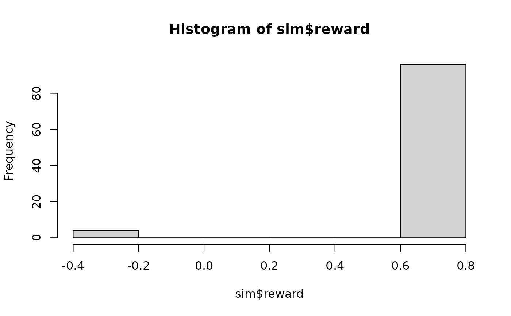

Sample trajectories from an MDP. The start state for each trajectory is chosen using the start definition in the model. Actions are chosen randomly or using an epsilon-greedy policy.
Usage
sample_MDP(model, n, ...)
# S3 method for class 'MDP'
sample_MDP(
model,
n,
start = NULL,
horizon = NULL,
epsilon = NULL,
exploring_starts = FALSE,
delta_horizon = 0.001,
trajectories = FALSE,
engine = NULL,
progress = TRUE,
verbose = FALSE,
...
)Arguments
- model
an MDP model.
- n
number of trajectories.
- ...
further arguments are ignored.
- start
probability distribution over the states for choosing the starting states for the trajectories. Defaults to "uniform".
- horizon
epochs end once an absorbing state is reached or after the maximal number of epochs specified via
horizon. IfNULLthen the horizon for the model is used.- epsilon
the probability of choosing a random action when using an epsilon-greedy policy. Default for solved models is 0 and for unsolved model 1.
- exploring_starts
logical; randomly sample a start/action combination to start the episode from.
- delta_horizon
precision used to determine the horizon for infinite-horizon problems.
- trajectories
logical; return the complete trajectories.
- engine
'cpp'or'r'to perform simulation using a faster C++ or a native R implementationNULLuses the C++ implementation unless the transition model or the reward are specified as R functions (which are slow in C++).- progress
show a progress bar?
- verbose
report used parameters
Value
A list with elements:
avg_return: The average discounted return.reward: Reward for each trajectory.action_cnt: Action counts.state_cnt: State counts.trajectories: A data.frame with the trajectories. Each row contains theepisodeid, thetimestep, the states, the chosen actiona, the rewardr, and the next states_prime. Trajectories are only returned fortrajectories = TRUE.
Details
The default is a faster C++ implementation (engine = 'cpp').
A native R implementation is available (engine = 'r').
Both implementations support parallel execution using the package
foreach. To enable parallel execution, a parallel backend such as
doParallel needs to be registered (see
doParallel::registerDoParallel()).
Note that small samples are slower using parallelization. Therefore, C++ simulations
with n * horizon less than 100,000 are always executed using a single worker.
Examples
# enable parallel simulation
# doParallel::registerDoParallel()
data(Maze)
# solve the MDP for 5 epochs and no discounting
sol <- solve_MDP(Maze, discount = 1)
sol
#> MDPModel, MDP - Stuart Russell's 3x4 Maze
#> Discount factor: 1
#> Horizon: Inf epochs
#> Size: 4 actions / 11 states
#> Storage: transition prob as matrix / reward as matrix. Total size: 32.3 Kb
#> Start: s(3,1)
#> Model list components: ‘name’, ‘discount’, ‘horizon’, ‘states’,
#> ‘actions’, ‘start’, ‘transition_model’, ‘reward’, ‘info’,
#> ‘absorbing_states’, ‘solution’
#>
#> Solved:
#> Method: ‘VI’
#> Solution converged: TRUE
#> Solution list components: ‘method’, ‘policy’, ‘converged’, ‘delta’,
#> ‘iterations’
# V in the policy is and estimate of the state values when following the optimal policy.
policy(sol)
#> state V action
#> 1 s(1,1) 0.8115564 right
#> 2 s(2,1) 0.7615521 up
#> 3 s(3,1) 0.7052527 up
#> 4 s(1,2) 0.8678082 right
#> 5 s(3,2) 0.6551492 left
#> 6 s(1,3) 0.9178082 right
#> 7 s(2,3) 0.6602740 up
#> 8 s(3,3) 0.6110843 left
#> 9 s(1,4) 0.0000000 right
#> 10 s(2,4) 0.0000000 right
#> 11 s(3,4) 0.3872455 left
gw_matrix(sol, what = "action")
#> [,1] [,2] [,3] [,4]
#> [1,] "right" "right" "right" "right"
#> [2,] "up" NA "up" "right"
#> [3,] "up" "left" "left" "left"
## Example 1: simulate 100 trajectories following the policy,
# only the final belief state is returned
sim <- sample_MDP(sol, n = 100, horizon = 10, verbose = TRUE)
#> Simulating MDP trajectories.
#> - method: C++ (cpp)
#> - n: 100
#> - horizon: 10
#> - epsilon: 0
#> - discount factor: 1
#> - exploring starts: 0
#> - start state distribution: 0 0 1 0 0 0 0 0 0 0 0
#>
sim
#> $avg_return
#> [1] 0.706
#>
#> $reward
#> [1] 0.80 0.80 0.72 0.72 0.76 0.76 0.80 0.80 0.68 0.76 0.76 0.80
#> [13] 0.76 0.64 0.68 0.76 -0.40 0.80 0.76 0.76 0.76 0.72 0.68 0.80
#> [25] -0.40 0.72 0.72 0.72 0.80 0.68 0.80 0.80 0.80 0.68 0.72 0.76
#> [37] 0.80 0.76 0.80 0.80 0.80 0.72 0.76 0.76 0.76 0.80 0.80 0.76
#> [49] 0.64 -0.40 0.76 0.64 0.72 0.80 0.80 0.80 0.76 0.80 0.72 0.80
#> [61] 0.80 0.80 0.76 0.80 0.72 0.64 0.72 0.80 0.68 0.72 0.76 0.80
#> [73] 0.68 0.72 0.76 0.72 0.80 0.80 0.80 0.64 0.80 0.72 0.80 0.80
#> [85] 0.76 0.80 0.68 0.80 0.72 0.76 0.80 0.76 0.72 -0.40 0.72 0.72
#> [97] 0.64 0.76 0.80 0.68
#>
#> $action_cnt
#> up right down left
#> 264 360 0 11
#>
#> $state_cnt
#> s(1,1) s(2,1) s(3,1) s(1,2) s(3,2) s(1,3) s(2,3) s(3,3) s(1,4) s(2,4) s(3,4)
#> 118 130 123 127 11 119 11 0 96 0 0
#>
#> $trajectories
#> data frame with 0 columns and 0 rows
#>
#> $avg_episode_length
#> [1] 7.35
#>
# Note that all simulations for this model start at s_1 and that the simulated avg. return
# is therefore an estimate to the value function for the start state s_1.
policy(sol)[1, ]
#> state V action
#> 1 s(1,1) 0.8115564 right
# Calculate proportion of actions taken in the simulation
round_stochastic(sim$action_cnt / sum(sim$action_cnt), 2)
#> up right down left
#> 0.42 0.56 0.00 0.02
# reward distribution
hist(sim$reward)

## Example 2: simulate trajectories starting from a uniform distribution over all
# states and return all trajectories
sim <- sample_MDP(sol,
n = 100, start = "uniform", horizon = 10,
trajectories = TRUE
)
head(sim$trajectories)
#> episode time s a r s_prime
#> 1 1 0 s(1,3) right 0.96 s(1,4)
#> 2 2 0 s(2,4) right 0.00 s(2,4)
#> 3 3 0 s(3,2) left -0.04 s(3,2)
#> 4 3 1 s(3,2) left -0.04 s(3,2)
#> 5 3 2 s(3,2) left -0.04 s(3,2)
#> 6 3 3 s(3,2) left -0.04 s(3,1)
# how often was each state visited?
table(sim$trajectories$s)
#>
#> s(1,1) s(2,1) s(3,1) s(1,2) s(3,2) s(1,3) s(2,3) s(3,3) s(1,4) s(2,4) s(3,4)
#> 65 63 39 78 35 101 32 16 5 7 7